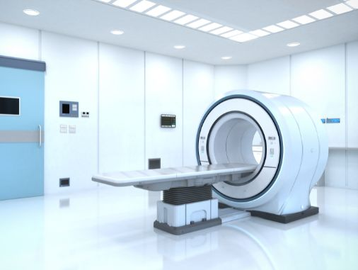
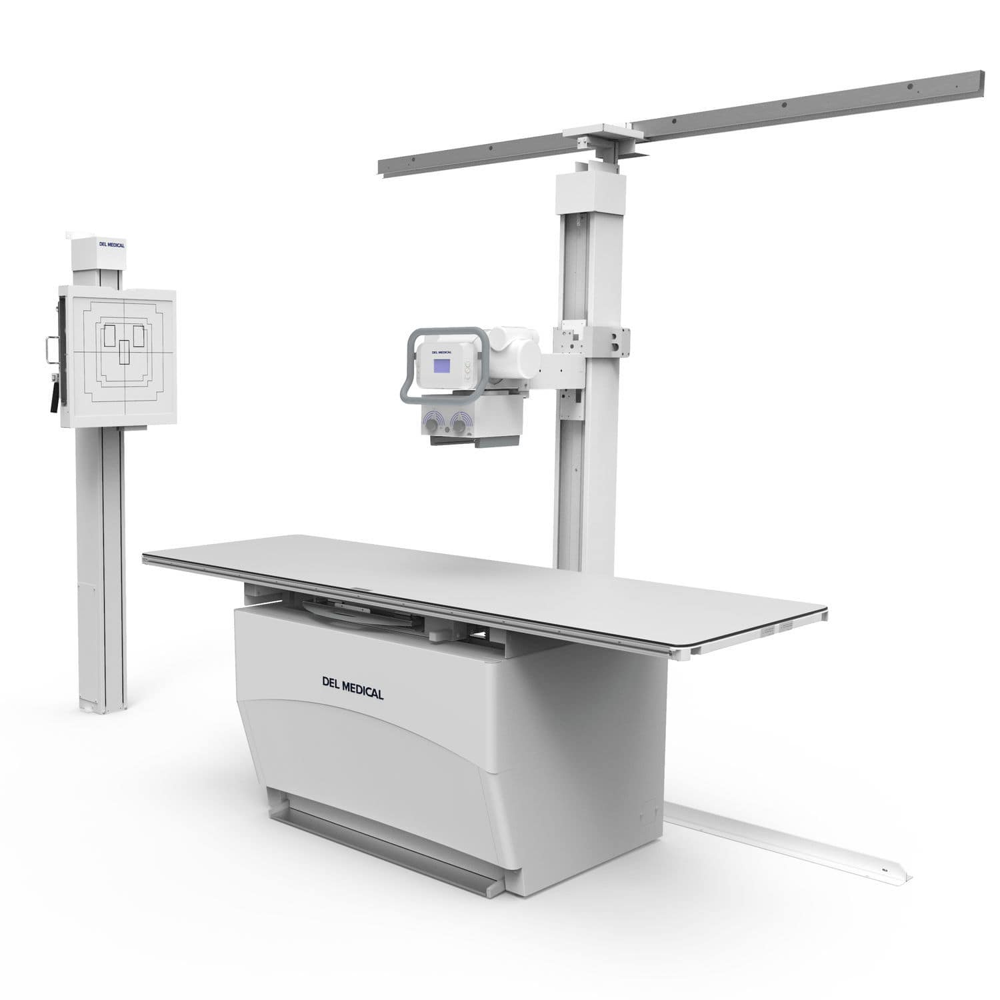

Qu'est-ce que l'imagerie médicale ?
L'imagerie médicale regroupe les techniques qui permettent d'obtenir des images de l'intérieur du corps humain. Ces examens aident les médecins à poser un diagnostic, à suivre l'évolution d'une maladie ou à guider un traitement.

